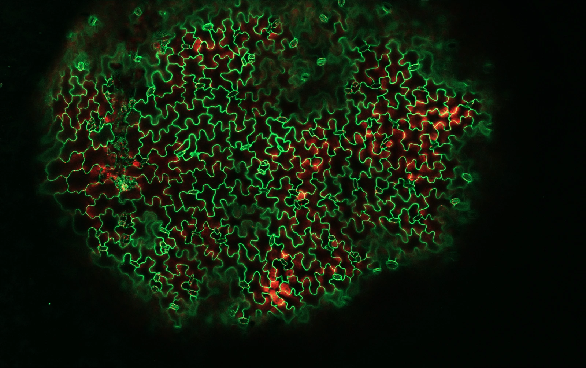

2026 · Trends in Plant Science · 31(10), 1303–1313
Oximes, peroxidases, and oxidative nitric oxide production: a new framework for plant NO metabolism?
Buezo J, Urra M, González EM, Morán JF
Understanding how plants respond to stress, from redox chemistry to cell wall remodeling.Comprender cómo responden las plantas al estrés, desde la química redox hasta la remodelación de la pared celular.
A central contribution of my work is the experimental identification of an oxidative NO-producing pathway from oximes in plants, published in Molecular Plant (2024). My current interests extend to peroxidases, protein S-nitrosation, lignification, suberization and the translation of stress-tolerance mechanisms into crop improvement.Una contribución central de mi trayectoria es la identificación experimental de una vía oxidativa de producción de NO a partir de oximas en plantas, publicada en Molecular Plant (2024). Actualmente exploro el papel de las peroxidasas, la S-nitrosación proteica, la lignificación, la suberización y la posible aplicación de los mecanismos de tolerancia al estrés para mejorar cultivos.
Molecular PlantMolecular Plant
Trends in Plant ScienceTrends in Plant Science
International patentPatente internacional
UPNA · IMAB · Pamplona
UPNA · IMAB
University of Tübingen (2023) · UPNA (2024)
Transilvania University of Brașov · Romania
UPNA · Pamplona
Three connected lines define my research programme, linking mechanisms at the molecular scale with plant performance and potential agronomic applications.Tres líneas conectadas definen mi programa de investigación, vinculando los mecanismos moleculares con el comportamiento de las plantas y sus posibles aplicaciones agronómicas.
Oximes, class III peroxidases, flavins and redox-mediated NO generation.Oximas, peroxidasas de clase III, flavinas y generación de NO mediante procesos redox.
The role of polyamine metabolism in plant acclimation and tolerance to abiotic stress, with a focus on nitrogen nutrition and stress-related physiological responses.Papel del metabolismo de poliaminas en la aclimatación y tolerancia de las plantas al estrés abiótico, con especial atención a la nutrición nitrogenada y las respuestas fisiológicas al estrés.
Lignin, suberin, apoplastic redox and root adaptation to ammonium and other abiotic constraints.Lignina, suberina, redox apoplástico y adaptación radicular al amonio y otros estreses abióticos.
Testing whether molecular insights can inform crop resilience, phenotyping and sustainable inputs.Explorar la aplicación de estos mecanismos a la resiliencia de cultivos, fenotipado e insumos sostenibles.

Postdoctoral period focused on ammonium tolerance and cell wall lignification.Etapa posdoctoral centrada en tolerancia al amonio y lignificación de la pared celular.
Forest ecosystem physiology, carbon fluxes and research coordination.Fisiología de ecosistemas forestales, flujos de carbono y coordinación científica.
Research mobility and international methodological exchange.Movilidad científica e intercambio internacional de metodologías.
14 journal publications · Every entry links to its dedicated Google Scholar record and, where verified, its DOI. Conference abstracts excluded.14 publicaciones en revistas · Cada entrada enlaza a su ficha de Google Scholar y, cuando está verificado, a su DOI. Se excluyen las contribuciones a congresos.
2026 · Trends in Plant Science · 31(10), 1303–1313
Buezo J, Urra M, González EM, Morán JF
2026 · Current Plant Biology · 46, 100585
Echeverría A, Calleja-Satrustegui A, Chu HD, Signorelli S, Buezo J, et al.
2025 · Physiologia Plantarum · 177(3), e70321
Buezo J, Urra M, González EM, Alcázar R, Marino D, Morán JF
2024 · Science of the Total Environment · 912, 169133
Buezo J, García-Medina N, Hereş AM, Petritan IC, et al.
2024 · Molecular Plant · 17(1), 178–198
López-Gómez P, Buezo J (co-first author), Urra M, Cornejo A, et al.
2023 · Plant Science · 332, 111718
Roman A, Montenegro J, Fraile L, Urra M, Buezo J, et al.
2022 · Antioxidants · 11(11), 2082
Tellechea E, Asensio AC, Ciaurriz P, Buezo J, López-Gómez P, Urra M, et al.
2022 · Journal of Experimental Botany · 73(16), 5581–5595
Urra M, Buezo J, Royo B, Cornejo A, et al.
2022 · Plants · 11(10), 1304
López-Gómez P, Smith EN, Bota P, Cornejo A, Urra M, Buezo J, Morán JF
2019 · Plant Science · 287, 110176
Buezo J, Esteban R, Cornejo A, López-Gómez P, et al.
2019 · Environmental and Experimental Botany · 162, 168–180
Royo B, Esteban R, Buezo J, Santamaría E, et al.
2019 · Physiologia Plantarum · 166(1), 88–104
Buezo J, Sanz-Sáez Á, Morán JF, Soba D, Aranjuelo I, Esteban R
2019 · Plant Foods for Human Nutrition · 74(1), 99–106
Esteban R, Buezo J, Becerril JM, García-Plazaola JI
2014 · Food Research International · 65, 207–214
Esteban R, Fleta-Soriano E, Buezo J, Míguez F, et al.
Universidad Pública de Navarra
Universitat de Barcelona
UPV/EHU
Co-inventor of international application PCT/EP2023/071478 concerning aldoximes as NO donors and possible agricultural and biomedical uses.Coinventor de la solicitud internacional PCT/EP2023/071478 sobre aldoximas como donadores de NO y posibles usos agrícolas y biomédicos.
Participation in PID2022-142968NB-I00 (oximes and polyamines, 2023–2026), BIOANCIENT (2025–2027) and DeWood (Romania, 2021–2022).Participación en PID2022-142968NB-I00 (oximas y poliaminas, 2023–2026), BIOANCIENT (2025–2027) y DeWood (Rumanía, 2021–2022).
Lead talk at PNO9 (New Delhi, 2024); oral contributions at Plant Oxygen Group (Antibes, 2024), Plant Molecular Biology Meeting (Castellón, 2024) and INTECOL (2022).Conferencia destacada en PNO9 (Nueva Delhi, 2024); comunicaciones orales en Plant Oxygen Group (Antibes, 2024), Reunión de Biología Molecular de Plantas (Castellón, 2024) e INTECOL (2022).
Undergraduate plant biology teaching, mentoring of BSc/MSc students, scientific outreach and public communication.Docencia universitaria de biología vegetal, tutorización de alumnado de grado y máster, divulgación y comunicación científica.
UPNA Research Award (2025) and recognition of the Molecular Plant 2024 article.Premio de Investigación UPNA (2025) y reconocimiento del artículo de Molecular Plant de 2024.
Selected coverage of scientific research, public engagement and activities beyond academia. All items link to their original coverage.Selección de noticias sobre investigación, divulgación y actividades fuera del ámbito académico. Todas las entradas enlazan a sus fuentes originales.
2026 · Diario de Navarra
Science · RecognitionCiencia · Reconocimiento
Coverage of the oxidative pathway of nitric oxide production in plants, featuring the research team.Noticia sobre la vía oxidativa de producción de óxido nítrico en plantas y los investigadores participantes.
Read original coverage ↗Leer noticia original ↗2025 · Diario de Navarra
Science · AwardsCiencia · Premios
Coverage of research awards and distinguished contributors, including Javier Buezo Bravo.Cobertura de los premios y de los investigadores reconocidos, entre ellos Javier Buezo Bravo.
Read original coverage ↗Leer noticia original ↗2019 · Noticias de Navarra
Outreach · Doctoral communicationDivulgación · Comunicación doctoral
Coverage of the Campus Iberus science communication competition, in which Javier participated as a UPNA representative.Cobertura del concurso de divulgación Campus Iberus, en el que Javier participó representando a la UPNA.
Read original coverage ↗Leer noticia original ↗2024 · Deporte Navarro
Sport · KendoDeporte · Kendo
Kenseikai 1 (Javier Buezo, Ibai Portugal and Mateo Soriano) finished first.Kenseikai 1 (Javier Buezo, Ibai Portugal y Mateo Soriano) obtuvo el primer puesto.
Read original coverage ↗Leer noticia original ↗2025 · Noticias de Navarra
Culture · Japanese martial artsCultura · Artes marciales japonesas
Coverage of a Japanese martial arts exhibition in Pamplona in which Javier took part.Noticia sobre una exhibición de artes marciales japonesas en Pamplona en la que participó Javier.
Read original coverage ↗Leer noticia original ↗2019 · Diario de Navarra
Science outreach · Science in the BarDivulgación · Ciencia en el bar
Coverage of bioluminescence and the public science talk on fluorescence and bioluminescence.Artículo sobre bioluminiscencia vinculado a la actividad de divulgación «Ciencia en el bar» sobre fluorescencia y bioluminiscencia.
Read original coverage ↗Leer noticia original ↗2026 · SoyDeNavarra
Sport · Kendo championDeporte · Campeón de kendo
Winner of the VII Navarre Kendo Championship (senior mixed category), held at Anaitasuna on 23 May 2026.Campeón del VII Campeonato Navarro de Kendo, categoría sénior mixta, celebrado en Anaitasuna el 23 de mayo de 2026.
Read original coverage ↗Leer noticia original ↗Discipline, curiosity and life beyond research.Disciplina, curiosidad y vida más allá de la investigación.
Beyond the laboratory, I practise and teach kendo, the Japanese martial art of fencing. Training, teaching and competition are important parts of my life, reinforcing perseverance, attention and respect for others.Fuera del laboratorio, practico y enseño kendo, el arte marcial japonés de la esgrima. El entrenamiento, la docencia y la competición forman parte importante de mi vida, vinculadas a la constancia, la atención y el respeto por los demás.
In 2024, my Kenseikai team won the III Basque–Navarre team tournament. In May 2026, I won the VII Navarre Kendo Championship in the senior mixed category. I have also participated in public demonstrations of Japanese martial arts in Pamplona.En 2024, mi equipo de Kenseikai ganó el III Torneo Vasco-Navarro por equipos. En mayo de 2026 me proclamé campeón del VII Campeonato Navarro de Kendo en categoría sénior mixta. También he participado en exhibiciones públicas de artes marciales japonesas en Pamplona.